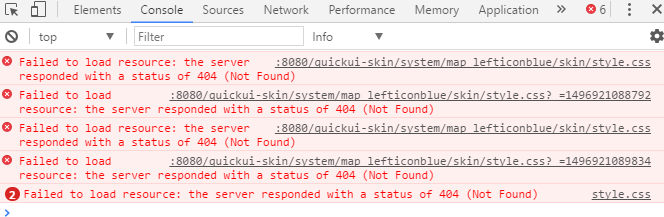

皮肤原理与参数配置
框架外观构成
框架外观由2部分组成：组件库主题包和皮肤包。
组件库主题包：在libs/skins目录下，分为blue、green、red等目录。用来控制组件库的风格样式。
框架整体风格样式可以千变万化，但是都可以大体归为几类色系。比如蓝色风格可能有十几种界面，但所有的蓝色系都使用的是blue的组件库主题包，即：每个主页都引入了libs/skins/blue目录下的style.css。
皮肤包：放在system目录下,用于做框架外观的个性化设置。每一个皮肤包中都有一个主页同目录下还有一套skin包与主页匹配。
使用个性化的外观配合某一色系的组件库就实现了风格的多样性。要使用某一种皮肤包，把该皮肤包下的main页面设为主页即可。
页面配置皮肤包参数
以名称为map_lefticon_blue的皮肤包中的主页main.html为例，头部代码如下：
<link href="../../libs/css/import_basic.css" rel="stylesheet" type="text/css"/>
<link href="../../libs/skins/blue/style.css" rel="stylesheet" type="text/css" id="theme" themeColor="blue"/>
<link href="skin/style.css" rel="stylesheet" type="text/css" id="skin" skinPath="system/map_lefticon_blue/skin/"/>
<script type="text/javascript" src="../../libs/js/jquery.js"></script>
<script type="text/javascript" src="../../libs/js/language/cn.js"></script>
<script type="text/javascript" src="../../libs/js/main.js"></script>
第1句是引入公共css库；
第2句引入组件库主题包css。需要设置id=”theme”，里面的themeColor指定组件库主题包，这个标签还可以加其他属性，比如设置全局默认字体大小，指定面包屑导航的div容器等等，将在框架参数章节介绍；
第3句引入皮肤包css。skinPath指定从工程根目录开始如何找到皮肤包css。注意，此处并不是css所在的相对目录，system是根目录第一级目录，前面不要加任何的相对路径。这个参数配置是为了让框架的每个子页面都能找到皮肤包所在位置，将在后面具体介绍；
第4句引入jquery库，该版本是1.9；
第5句引入框架的语言包。
第6句引入主框架页面所需要的脚本main.js，该脚本只有主框架页面才使用。
主页中使用iframe的方式引入子页面。每个子页面的头部会引入如下代码：
<script type="text/javascript" src="../../libs/js/jquery.js">&1t;/script>
<script type="text/javascript" src="../../libs/js/language/cn.js">&1t;/script>
<script type="text/javascript" src="../../libs/js/framework.js">&1t;/script>
<link href="../../libs/css/import_basic.css" rel="stylesheet" type="text/css"/>
<link rel="stylesheet" type="text/css" id="skin" prePath="../../"/>
<link rel="stylesheet" type="text/css" id="customSkin"/>
第1句引入jquery库，该版本是1.9；
第2句引入框架语言包；
第3句引入框架引擎脚本：framework；
第4句引入公共CSS库；
第5句用来引入组件库主题包css。这里并没有引入文件，而是设置id=skin，并设置了prePath。prePath是指定当前页面相对于根目录的相对路径，用来跟主框架页的themeColor配合寻找到组件库主题包css，这个在下面详细讲解。同时这个标签还可以加其他属性，比如控制当前页是否出现滚动条；
第6句用来引入皮肤包css。这里也没有引入文件，而是设置id=customSkin。也是通过prePath得到当前页面相对于根目录的相对路径，用来跟主框架页的skinPath配合寻找到皮肤包css，这个在下面详细讲解。
皮肤包加载原理
通过上面我们得知，框架的主页面引入了需要使用的组件库主题的css文件和皮肤包css文件，而子页面是通过主页面和子页面配置的参数，自动获取皮肤所在路径动态加载css。这样的好处是每套皮肤包都只是主页配置不一样，而子页面配置都是一样的。当你给项目换风格时，只要改变主页的配置就行，不必每个子页面都改css路径，同时还可以实现多套皮肤共用一套子页面。
当子页面刚被加载时，framework引擎会自动给id=skin的标签添加css路径。添加的路径规则是这样的：“本页设置的prePath”+“libs/”+“主框架设置的themeColor”+“/style.css”。例如本页的prePath设为“../../”，主框架的themeColor为“blue”，则这个CSS的真实路径是：“../../libs/blue/style.css”
同时，framework引擎也会给id=customSkin的CSS添加路径。添加的路径规则是这样的：“本页设置的prePath” +“主框架设置的skinPath”+“style.css”例如本页的prePath设为“../../”，主框架的skinPath为“system/blue1accordion/skin/”，则这个CSS的真实路径是：“../../system/blue1accordion/skin/style.css”
所以，prePath的作用就是来寻找libs所在的目录。例如在java工程中，如果libs放在根目录，那么就可以设置prePath="<%=request.getContextPath()%>"
皮肤包改名
例如，想把皮肤包map_lefticon_blue改为map，那么除了更改主页引入的CSS的路径，很重要的一点是：还要把skinPath参数中“system/map_lefticon_blue/skin/”的map_lefticon_blue改为map，即skinPath=“system/map/skin/”
皮肤包文件夹改名前：
皮肤包文件夹改名后：

检查路径配置是否正确
当第一次配置完主框架和内容页面的参数后，可以在主框架的id=”theme”的css链接中加入debug="true"，来测试是否配置正确。例如：
<link href="../../libs/skins/blue/style.css" rel="stylesheet" type="text/css" id="theme" themeColor="blue" debug="true"/>
如果配置成功，则弹出成功提示。
如果配置不成功，例如皮肤包文件夹名字为：map_lefticon_blue，而参数却写成了skinPath="system/blue1_lefticon/skin/"
则会弹出提示："内容页面无法通过路径：../../system/map_lefticonblue/skin/style.css加载CSS，请检查主页的skinPath设置的是否正确"
也可以从chrome开发者工具或者firefox的firebug中看到404找不到路径的错误。

通过仔细检查就可以发现mapleft后面少了一个
当检查配置正确后，再把debug="true"去掉，则不再提示。